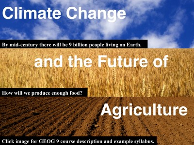
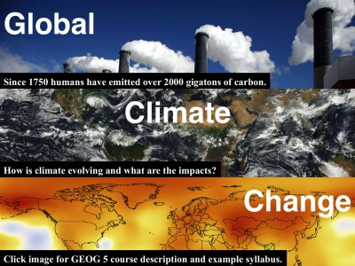
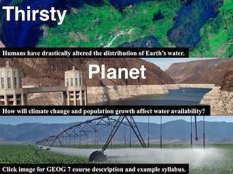

The Applied Hydroclimatology Group at Dartmouth is recruiting an M.S. or Ph.D. student to explore the current and future sustainability of agriculture in the United States. The successful applicant will use regional climate and crop models to advance projections of US climate, water supply, and irrigated agricultural production, as well as assess tradeoffs between energy and food production. A background in agricultural science, atmospheric science, or hydrology and experience with programming are preferred but not required.
Graduate students can join the Applied Hydroclimatology Group through either the Ecology, Evolution, Environment, and Society (EEES) Graduate Program (https://sites.dartmouth.edu/EEES, Ph.D. only) or the Department of Earth Sciences (EARS) Graduate Program (https://earthsciences.dartmouth.edu/graduate, M.S. or Ph.D.). This position provides tuition, health insurance, and a monthly stipend. Applicants are encouraged to email Jonathan (jwinter@dartmouth.edu) with any questions, and apply by December 1st, 2023 (EEES) or December 15th, 2023 (EARS) to receive full consideration.
Agriculture is inherently vulnerable to changing climate. Climate-smart management decisions have the potential to improve agriculture’s adaptive capacity and reduce climate change impacts. We improve the understanding of historical and future food systems by analyzing climate variability, developing future climate scenarios, and exploring the relationship between agricultural systems and local climate.
The Northeastern United States has experienced a substantial increase in heavy precipitation over the last century. We characterize the temporal and spatial attributes of this increase, investigate the climatological mechanisms that have led to enhanced heavy precipitation, and explore the implications of extreme precipitation on flooding.
Irrigated croplands are essential to food production and responsible for the vast majority of human water consumption. Crop models have the potential to inform the management and expansion of irrigation to reduce global hunger, but typically have simplistic representations of irrigation. We are developing new models and frameworks to better understand the future of irrigated agricultural systems.
Lyme disease is the most prevalent vector-borne disease in the United States, rapidly expanding, and centered in the Northeast. We assess the causes of historical Lyme disease expansion and predict future Lyme disease incidence for the northeastern United States using models of tick dynamics and Lyme disease prevalence, with a focus on the role of climate and land cover.

GEOG 19.01:
The global agricultural sector faces the
significant challenge of feeding a
population projected to increase to 9
billion by mid-century under an evolving
climate. This course will explore the
physical geography of agricultural
production systems throughout the
world with an emphasis on the interactions
between crops, climate, water, soils,
and technology.

GEOG 15.01:
Climate is a fundamental driver of populations,
economies, and cultures. Over the past century,
humans have been modifying the atmosphere
through the emission of greenhouse gasses. This
course will provide an overview of the Earth’s
climate system and the physical basis, impacts,
and societal dimensions of climate change.

GEOG 7.14:
Humans have radically altered the distribution
of water on Earth. We’ve built cities in deserts
supplied with water from hundreds of miles away,
extracted enough groundwater to alter the Earth’s
gravitational field, and dammed sixty-five percent
of global freshwater flows. This course will
introduce students to the physical geography of
water, survey human interactions with water through
case studies from around the world, and explore how
climate change and population growth will affect future
quality and the availability of water.
Jonathan Winter is an Associate Professor in the Department of Geography and Adjunct Associate Professor in the Department of Earth Sciences at Dartmouth College. Before moving to the Upper Valley in the summer of 2013, Jonathan was an Associate Research Scientist at Columbia University Earth Institute and a NASA Postdoctoral Program Fellow at Goddard Institute for Space Studies in New York City. Jonathan received his PhD from Massachusetts Institute of Technology and completed his undergraduate studies at SUNY College of Environmental Science and Forestry in Syracuse, NY. Outside of academia, Jonathan spends his time traveling, hiking, exploring VT/NH with his family (wife Teresa, sons Lucas, Nolan, and Henry, dog Taz), snowboarding, and trying to find the latest and greatest food and music. A current version of Jonathan’s CV is available here.
Joseph Savage is a PhD student in the Ecology, Evolution, Environment, & Society (EEES) program. His research focuses on using computational models to investigate the impact of climate change and land cover on the historic and future expansion of Lyme disease. He is broadly interested in the community ecology of disease and the use of models to better understand the dynamics of disease and how to best manage them. His undergraduate research focused on using computational models to study how host population dynamics impact the dynamics of Lyme disease. Joseph holds a BA in Ecology & Evolution and Computational Biology from Colby College. Joseph can be found outside all year round hiking, biking, juggling, and felling trees, or inside drinking and brewing cider and other fermented beverages.
Janelle Wargo is an MS student in the Earth Sciences (EARS) program, interested in extreme weather modeling and forecasting. Her research will investigate extreme precipitation and drought trends in the Northeast US. Historical observations and future simulations will be used to learn about climate change in this local region. Janelle attained a B.S. in Engineering (Civil and Environmental) from Wake Forest University. Her undergraduate research explored modeling stomatal conductance and photosynthesis in cloud forests. Outside of academia, Janelle enjoys hiking, reading, and trying new food.
Madeline Wolfe '25 is an undergraduate assisting with determining the impacts of climate change on crop production. She joined the group through the Women in Science Project in January 2022. She is currently planning on majoring in Environmental Studies and Geography at Dartmouth. Madeline has lived in New Hampshire her whole life, and enjoys hiking, running, baking, and skiing (nordic, backcountry, and alpine). At Dartmouth, she is on the Club Triathlon and Club Nordic teams, and does lots of trips through the Outing Club.
Lucas Price – Postdoctoral Researcher '23, U.S. Department of the Interior Presidential Management Fellows Program
Natalie Teale – Postdoctoral Fellow '23, Assistant Professor at Miami University
Justine Brown – '26
Lily Ding – '24
Christopher Picard – '23, MS student at University of Colorado, Boulder
Trevor Partridge – PhD Student '21, Postdoctoral Researcher at United States Geological Survey
Charlotte Cockburn – MS Student '21, Physical Scientist at Environment Canada
Ethan Coffel – Neukom Postdoctoral Fellow ’20, Assistant Professor at Syracuse University.
Eliza Dekker – ’19
Huanping Huang – PhD Student ’19, Postdoctoral Researcher Lawrence Berkeley National Laboratory
Andrew Crutchfield – ’18, Dartmouth Outdoor Programs Coordinator
Jess Jones – ’18, Active duty medical services for the US Army
Jose Lopez – Postdoctoral Researcher ’18, Postdoctoral Associate at The University of Minnesota
Mariana Webb – ’18, PhD Student at the University of Nevada, Reno
Stephanie Spera – Neukom Postdoctoral Fellow ’18, Assistant Professor at The University of Richmond
Eliza Hoffman – ’17, Renewable energy engineer
Fiona Bowen – ’17, Associate Consultant at Bain & Company
Ross Alter – Postdoctoral Researcher ’16, Research Meteorologist at U.S. Army Engineer Research and Development Center
Evan Curhan – ’14, Restaurant acquisition and management
C.F. Cockburn, J.M. Winter, E.C. Osterberg, and F.J. Magilligan, 2023: Drivers of future streamflow changes in watersheds across the Northeastern United States. Journal of the American Water Resources Association, in press.
C. Picard, J.M. Winter, C.F. Cockburn, J. Hanrahan, P.J. Clemins, and B. Beckage, 2023: Twenty-first century increases in total and extreme precipitation across the Northeastern United States. Climatic Change, 176, 72.
M. Holthuijzen, B. Beckage, P.J. Clemins, D. Higdon, and J.M. Winter, 2022: Robust bias-correction of precipitation extremes using a novel hybrid empirical quantile mapping method: Advantages of a linear correction for extremes. Theoretical and Applied Climatology, 149, 863-882.
A. Zia, A.W. Schroth, J.S. Hecht, P. Isles, P.J. Clemins, S. Turnbull, P. Bitterman, Y. Tsai, I.N. Mohammed, G. Bucini, E.M.B. Doran, C. Koliba, A. Bomblies, B. Beckage, J.M. Winter, E.C. Adair, D.M. Rizzo, W. Gibson, and G. Pinder, 2022: Climate change-legacy phosphorus synergy hinders lake response to aggressive water policy targets, Earth's Future, 10, e2021EF002234.
J.S Hecht, A. Zia, P.J. Clemins, A.W. Schroth, J.M. Winter, P.D. Oikonomou, D.M. Rizzo, 2022: Modeling the sensitivity of cyanobacteria blooms to projected changes in precipitation and temperature variability, Science of the Total Environment, 812, 151586.
Google ScholarPostdoctoral Researchers: There are several Dartmouth Postdoctoral Fellowships available, including the
Neukom Institute Postdoctoral Fellows Program and the Society of Fellows Postdoctoral Fellows Program. Finally, based on qualifications and area of research, postdoctoral positions are sometimes available directly through the group.
Graduate Students: Graduate students can join the Applied Hydroclimatology Group through either the
Ecology, Evolution, Environment, and Society Graduate Program (Ph.D. only) or the Department of Earth Sciences Graduate Program (M.S. or Ph.D.). Apply by 12/15 for full consideration.
Undergraduate Students: Projects currently being recruited for are posted on the Undergraduate Research Projects Database. I am also interested in mentoring student-developed projects supported by Dartmouth Undergraduate Research and advising Department of Geography senior honors theses.
Jonathan Winter
Department of Geography
Dartmouth College
015 Fairchild
Hanover, NH 03755
Phone: 603-646-6456
Jonathan.M.Winter@Dartmouth.edu
@AHCG_Dartmouth